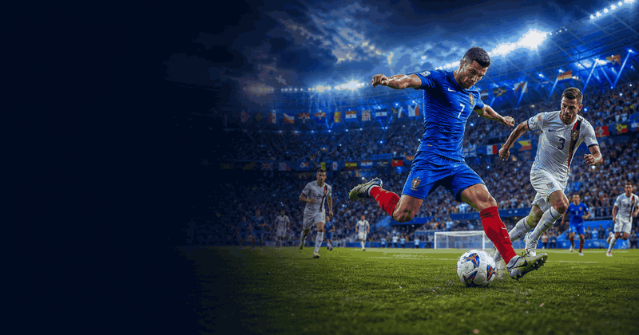
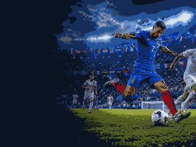

UEFA European Championship
First final1960
Next hostsUK / Ireland
Top title leaders

More footballFootball topicMore finals, tournaments and calendar moments.
UEFA European Championship 2028 in the United Kingdom and Ireland
UEFA European Championship guide
UEFA European Championship belongs in the sport, football, uefa european championship collection on OneSliders. Use this page as the compact evergreen entry point: start with what the event is, then scan the current edition details, location cues, schedule context and links back into the wider topic. The page is kept short by design, but it should still give enough unique context to distinguish this event from nearby fixtures, annual editions and broader category listings.